AI 每日新聞彙整
全部主題
其他
6 家媒體報導huangjensennvidia
Jensen Huang Is Back as Nvidia CEO
The company’s board of directors has reinstated Huang a little more than a week after the CEO resigned amid allegations of multiple affairs, including with a direct report.
- The Verge AI Trump engineered a risky comeback for Jensen Huang
- The Verge AI Nvidia CEO Jensen Huang is back. What happens next?
- The Verge AI Welcome to elite impunity, Jensen Huang
- TechCrunch AI Elon Musk and others rejoice as Jensen Huang is reinstated at Nvidia amid scandal
- TechCrunch AI Megaspeed, the company at the center of the Jensen Huang scandal, appears headed for a US blacklist
- TechCrunch AI Nvidia employees greet Jensen Huang like a hero as he returns to company’s HQ
- The Verge AI How Jensen Huang ended up as Nvidia CEO again
- TechCrunch AI Jensen Huang scheduled to testify next week in Senate following reinstatement as Nvidia CEO
- Wired AI Jensen Huang Is Back, and So Is Nvidia’s Stock
- TechCrunch AI Jensen Huang isn’t out of the woods yet
- The Verge AI White House brags that Trump was ‘totally involved’ in getting Jensen reinstated
- The Verge AI Tech leaders are celebrating Jensen Huang’s return
- Ars Technica AI Jensen Huang reinstated as Nvidia CEO, board chair
- TechCrunch AI Trump endorses Jensen Huang’s return to Nvidia, says US has no evidence of wrongdoing
- ZDNet AI Nvidia CEO Jensen Huang is back after a stunning reversal
- Wired AI Jensen Huang Is Back as Nvidia CEO
- TechCrunch AI Nvidia reverses course and brings Jensen Huang back as CEO
- Hacker News (100+) Nvidia Reinstates Jensen Huang as CEO
4 家媒體報導shipcodeclaude
Claude can ship code for you now – how to try it (if you dare)
Would you let a few Claude agents review and ship your code for you?
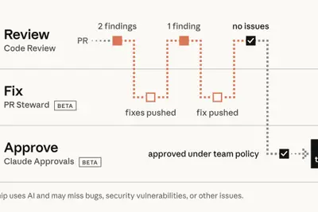
- IT之家 Anthropic 推出 Claude Ship 测试版：AI 可自动审查、修复及批准代码
- TechCrunch AI Anthropic launches Claude Ship, letting AI agents review, fix, and approve code changes
- The Verge AI Claude AI can review pull requests and ship fixes on its own now
- ZDNet AI Claude can ship code for you now – how to try it (if you dare)
3 家媒體報導grokxaisue
States Sue SpaceX Over Grok Deepfakes
The attorneys general of Oregon and Virginia are suing several of Elon Musk’s companies, alleging they implemented weak safeguards against sexualized imagery of real people, including children.
3 家媒體報導googlesearchintel
A more tailored Google Search that’s uniquely yours
Google Search bar with the text "Personal Intelligence" surrounded by the Google Wallet, Google Drive, GMail, Google Photos, Google Calendar, and Google G logo icons
2 家媒體報導nothingearnote
Nothing’s upcoming Ear Note is a pair of earbuds with AI transcription
Nothing's new AI device is the Ear Note, a set of earbuds and their microphone-equipped charging case that can record and transcribe conversations, with a connected app to manage the recordings, transcriptions and AI-generated summaries, similar to Apple's new Watch feature and d
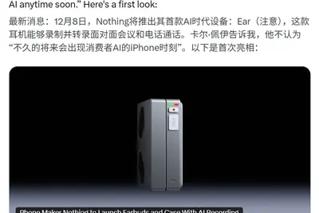
2 家媒體報導shirudoopensourcecisco
告别“重启才能修复”：OpenAI 携手思科开源 Shirudo，给 Linux 装上临时盾牌
IT之家 11 月 24 日消息，OpenAI 昨日（11 月 23 日）宣布携手思科（Cisco）推出开源安全运行时 Shirudo，基于 eBPF 技术为运行中的系统提供无需重启的临时漏洞防护，已通过 Java4Shell 攻击拦截测试。 OpenAI 在博文中指出，传统安全响应中，企业发现漏洞后往往要经历修复开发、测试、灰度发布和全量上线等环节，可能耗时数天甚至数周。 但攻击者不会等待企业完全修复，一旦漏洞被公开或被利用，正在运行的服务就可能暴露在风险中。更棘手的是，漏洞利用与正常业务请求有时会调用相同的 Linux 系统操作，若简单封禁相关行为，
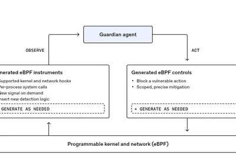
2 家媒體報導claudeanthropic167
黎曼猜想是什麼？Anthropic數學家靠Claude破解167年懸案，為何學界不盡然買單？
Anthropic數學家與Claude宣稱證明167年懸案黎曼猜想，1,700萬行程式碼雖獲驗證，但25萬頁說明未公開、人類讀不懂，引發學界保留。
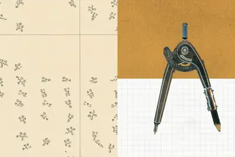
2 家媒體報導openroutersafety200
AI 提示詞送出後誰看得到？近 200 萬筆誘餌實測：標記「零資料保留」的請求也遭竊，OpenRouter 下架 3 家推論服務供應商
工業資安公司 Dragos 研究長 HD Moore 近日公布一項大規模實驗：研究團隊在近 200 萬筆 AI 提示詞（prompt）中植入獨一無二、可追蹤的誘餌憑證與秘密連結，再觀察這些秘密在哪裡出現。結果有證據顯示，至少三家 AI 推論服務供應商（inference provider，又稱主機服務商）遭攻擊者入侵，攻擊者利用存取權竊取這些業者收到的提示詞，研究團隊的誘餌也在其中；推論市場中也有多家轉售業者記錄提示詞，並以某種方式轉交給後來使用這些憑證的人，還有多起推論服務供應商未遵守使用者隱私設定的案例。AI 路由平台 OpenRouter 事後已將
anthropic
AI 拿別人的歌詞練功，版權費誰來付？音樂巨頭向 Anthropic 開戰
當 AI 能幾秒內寫出一首結構完整的歌曲，背後是學習了數百萬首人類作品，而這究竟該不該事先取得授權並支付版權費 […]
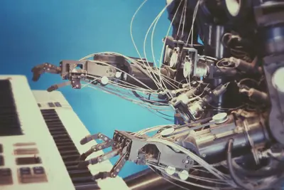
- 科技新報 TechNews AI 拿別人的歌詞練功，版權費誰來付？音樂巨頭向 Anthropic 開戰
黃仁勳重新執掌NVIDIA 度過「15天風暴」下一挑戰為何？
黃仁勳從2026年11月8日公開道歉、11月12日正式辭去NVIDIA總裁、執行長及董事職務，到11月23日董事會一致通過復職，整起風暴歷時15天；若從正式辭職到重新回任計算，則僅11天。
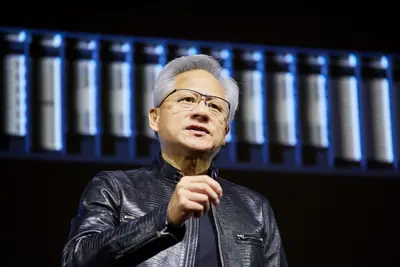
- DIGITIMES 黃仁勳重新執掌NVIDIA 度過「15天風暴」下一挑戰為何？
timdiamondcopper
AI晶片散熱需求導入「鑽石銅」 加工是最大瓶頸
AI伺服器晶片功耗持續攀升，散熱需求提高，且晶片面積持續放大，散熱結構從原本2層熱介面材料（TIM），朝1層方向邁進，散熱材質也從傳統的銅，轉向鑽石銅（Diamond Copper）。然而，散熱廠直指，鑽石銅最大瓶頸在加工，尚未看到大規模導入的契機。<br ...
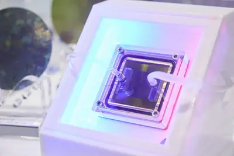
- DIGITIMES AI晶片散熱需求導入「鑽石銅」 加工是最大瓶頸
regulation
評析：黃仁勳復職的省思 中國市場策略、美國監管仍待觀察
NVIDIA董事會最終仍決定讓創辦人黃仁勳，重新執掌CEO大位，黃仁勳可說是經歷了一場「15天風暴」。
- DIGITIMES 評析：黃仁勳復職的省思 中國市場策略、美國監管仍待觀察
回顧黃仁勳經歷的「15天風暴」 NVIDIA董事會為何大轉變？
黃仁勳去職、復職的「15天風暴」，不再只是個人醜聞，擴大延燒成牽動企業治理、華府政治、國家安全、AI資本市場及全球半導體供應鏈的重大事件。為何NVIDIA董事會在短短6天內，從明確拒絕黃仁勳回任、積極尋找外部接班人，突然轉向一致通過復職？<br ...

- DIGITIMES 回顧黃仁勳經歷的「15天風暴」 NVIDIA董事會為何大轉變？
regulation
評析：川普說情、黃仁勳回任 美國國安調查葫蘆裡賣什麼藥？
美國總統川普（Donald Trump）認為，黃仁勳既已道歉，NVIDIA應該給予第二次機會；如今NVIDIA董事會已正式宣布黃仁勳回任總裁暨執行長，並強調在聽取美國政府高層意見後，確信其復職無國安風險。然而，由於NVIDIA的先進AI晶片在美國政府禁令下...
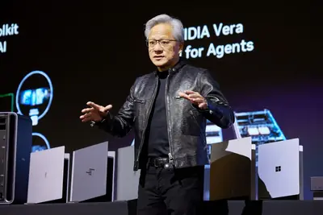
- DIGITIMES 評析：川普說情、黃仁勳回任 美國國安調查葫蘆裡賣什麼藥？
440spacexfunding
SpaceX完成440億美元AI晶片融資 高殖利率凸顯市場疑慮
隨著AI基礎設施融資浪潮持續擴大，SpaceX完成一筆規模約440億美元、與NVIDIA晶片掛鉤的融資定價，其中約320億美元債務票據的絕大部分定價殖利率突破8%，高於一般投資級債券水準，反映市場對AI鉅額支出能否回收仍存疑慮。
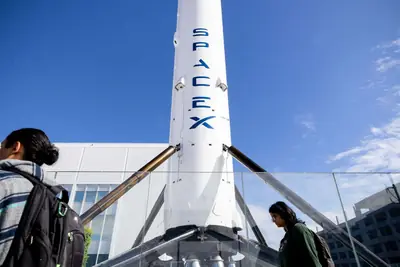
- DIGITIMES SpaceX完成440億美元AI晶片融資 高殖利率凸顯市場疑慮
datacenteranthropic
選址郊區也無用 Anthropic昆士蘭資料中心照樣遭反彈
Anthropic在澳洲的資料中心開發案遭到當地區民反對。這已經不是第一起澳洲對資料中心的抗議事件。
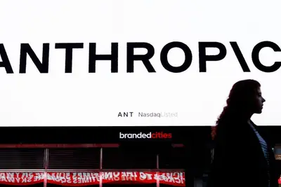
- DIGITIMES 選址郊區也無用 Anthropic昆士蘭資料中心照樣遭反彈
asic
NVIDIA一時跌倒ASIC吃飽？ ASIC需求穩健靠的是「成本效益」
NVIDIA近期陷入創辦人黃仁勳辭職與晶片走私調查的雙重風暴，最新轉圜NVIDIA董事會一致投票通過恢復總裁、執行長（CEO）以及董事會成員職務。
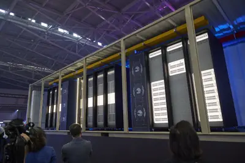
- DIGITIMES NVIDIA一時跌倒ASIC吃飽？ ASIC需求穩健靠的是「成本效益」
datacenterfundingiea
AI資料中心投資上看4兆美元 全球電網面臨擴建壓力
人工智慧（AI）資料中心加速擴張，正在改變全球電力供需結構，也讓原本老舊且擴建緩慢的電網面臨前所未有的壓力。國際能源總署（IEA）最新警告，到2030年時，全球資料中心用電量將逼近每年1,000TWh，較目前增加近倍，資料中心相關投資規模上看4兆美元。<b...
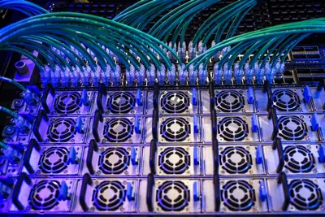
- DIGITIMES AI資料中心投資上看4兆美元 全球電網面臨擴建壓力
compute
東南亞晶片出口受限 印度兩大財團搶AI商機
Megaspeed轉運風波爆發，先前黃仁勳辭任NVIDIA執行長職務，美國加強對東南亞多國晶片出口管制，杜絕中國業者遠端存取算力。
- DIGITIMES 東南亞晶片出口受限 印度兩大財團搶AI商機
chip
【漫圖秒懂】晶片管制下另闢蹊徑！中國利用美AI訓練自家模型
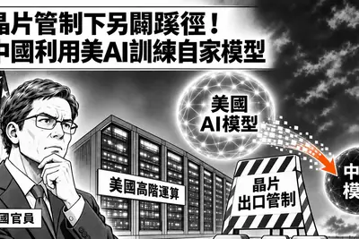
- DIGITIMES 【漫圖秒懂】晶片管制下另闢蹊徑！中國利用美AI訓練自家模型
neocloudhbmasic
Neocloud融資暫時轉緊 GPU成長壓力較ASIC、記憶體更沉重
美國期中選舉後，地方反對建置AI資料中心的聲浪，似乎化作政策現實。
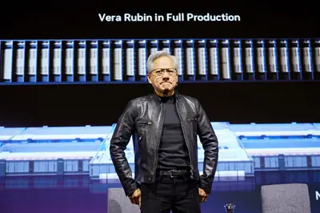
- DIGITIMES Neocloud融資暫時轉緊 GPU成長壓力較ASIC、記憶體更沉重
nandessdsamsung
三星拟扩大西安工厂先进 NAND 产能、升级 V9 闪存产线，扩大面向 AI 数据中心的 eSSD 供应
IT之家 11 月 24 日消息，据《首尔经济日报》今日报道，三星电子计划将位于中国陕西西安的半导体工厂打造成面向人工智能（AI）数据中心企业级固态硬盘（eSSD）的核心生产基地，重点扩大第九代垂直 NAND 闪存（V9）产能。 截至今年第二季度，三星西安一厂（X1）和二厂（X2）的晶圆月投入能力均为 5 万片，合计达到 10 万片（IT之家注：单位为 300mm 晶圆）。这相当于三星平泽四座工厂月产能总和（20 万片）的一半。三星两地 NAND 工厂的晶圆月产能合计约为 30 万片，其中西安工厂占比约 33%。 消息人士称，三星计划升级 X2 洁净室内
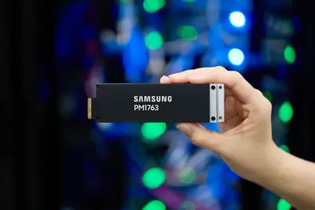
美國管制與非紅供應鏈成趨勢，未來 AI 產業走向的幾點觀察
美國期中選舉後，美國人工智慧（AI）產業發展會否因美國國會重組而產生變化，已引起金融市場波動，但期中選舉反應的 […]
- 科技新報 TechNews 美國管制與非紅供應鏈成趨勢，未來 AI 產業走向的幾點觀察
safety
AI 成網攻加速器：零時差漏洞翻倍、平均 11 天遭駭，雲端系統恐 3 小時內淪陷
最新資安觀察顯示，人工智慧（AI）正成為網路攻擊的「加速器」。綜合多份於 11 月 21 日至 22 日發布的 […]
- 科技新報 TechNews AI 成網攻加速器：零時差漏洞翻倍、平均 11 天遭駭，雲端系統恐 3 小時內淪陷
transformerloopfirst
GLM-5.4: Toward Generalized Coding with Our First Loop Transformer
GLM-5.4: Toward Generalized Coding with Our First Loop Transformer GLM 5.4 is now available from Chinese AI lab Z.ai. It's their first model to use a looped transformer architecture, which they describe like this: In a standard Transformer, each layer runs once per forward pass.
computeregulation
雲端「算力」也逃不掉！美晶片禁令再升級，防堵中企藉由第三國「洗產地」
美國近日收緊晶片出口管制，將新加坡、馬來西亞等五國列為轉運高風險國，出口先進晶片須先取得許可，並限制海外資料中 […]
- 科技新報 TechNews 雲端「算力」也逃不掉！美晶片禁令再升級，防堵中企藉由第三國「洗產地」
ipoclass337.8
Anthropic CEO 达里奥 · 阿莫代伊出售 337.8 万股股票，IPO 当天套现约 2.8 亿美元
IT之家 11 月 24 日消息，当地时间 11 月 23 日，美国证券交易委员会（SEC）披露的 Form 4 文件显示，Anthropic CEO 达里奥 · 阿莫代伊（Dario Amodei）于 IPO 上市当天出售了 3,378,378 股 Class A 普通股，成交价格为每股 83 美元（即 IPO 发行价）。 按该价格计算，交易总额约为 2.804 亿美元 （IT之家注：现汇率约合 18.73 亿元人民币） 。 截至 11 月 23 日美股收盘，Anthropic 股价报 87.64 美元，当日下跌 1.27 美元（-1.43%），总市值
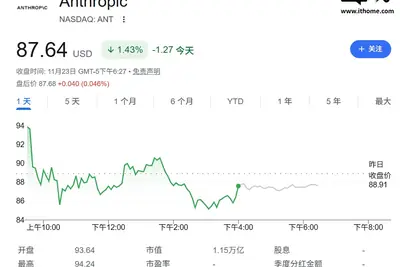
700
IT早报 1124：英伟达恢复黄仁勋 CEO 职务；中国汽车在 39 国的份额超过日本汽车；3399 元起荣耀 700 系列手机发布；智谱 GLM-5.4 模型发布...
“IT早报”时间，大家好，现在是 2026 年 11 月 24 日星期二，今天的重要科技资讯有： 1. 英伟达董事会恢复黄仁勋总裁兼首席执行官职务，英伟达美股盘前涨幅最高达 30% 英伟达官方 24 日宣布，黄仁勋即日起复任总裁兼首席执行官及董事会成员。公告提到，董事会在与黄仁勋进行一系列讨论和会议后，一致投票决定恢复其职务。英伟达表示，董事会经过与黄仁勋多轮讨论和会议，对其坦诚程度及领导公司能力表示认可，并认为恢复其职务符合股东、员工、合作伙伴及客户的最佳利益。>> 查看详情 2. 中国汽车在 39 国的份额超过日本汽车 2026 年，德国、巴西等 1
computegrokspacex
马斯克承认 AI 研发落后对手：出租 SpaceXSI 算力比自研 Grok 更赚钱
IT之家 11 月 24 日消息，据《纽约时报》当地时间 11 月 23 日报道，SpaceX 首席执行官埃隆・马斯克近日向员工表示，公司在人工智能（AI）研发方面正落后于 Anthropic、OpenAI 等竞争对手，因此，与其将数据中心算力全部用于自研 AI 产品，不如出租给竞争对手，以获得更高的商业回报。 三名知情人士称，SpaceX 自 5 月以来一直向 Anthropic、谷歌等企业出租数据中心算力，相关业务每月可带来数十亿美元收入。与此同时，SpaceX 也在开发 Grok 聊天机器人、Grok Bot 等自有 AI 产品，但马斯克认为，公司
leanopensourcedeepmind
最高提速 290 倍：谷歌让 AI 智能体“开会”优化量子算法，缓解计算资源瓶颈
IT之家 11 月 24 日消息，谷歌 DeepMind 团队携手谷歌 Quantum AI 团队于昨日（11 月 23 日）发布联合研究成果， 利用多组 Gemini 4 智能体协同工作，并结合形式化数学验证工具 Lean，成功优化了多项量子算法，降低部分量子计算任务的资源需求。 量子计算机有望在未来解决经典超级计算机无法企及的问题，但即便使用当前最优量子算法，部分重要应用所需的资源仍超出早期量子硬件的承载能力。 谷歌 DeepMind 与 Google Quantum AI 团队在最新研究论文中，借助 Gemini 4 智能体团队对经典量子算法进行优
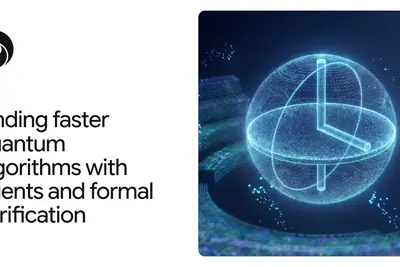
supertakemarketraises
Supertake raises $20M to let AI agents turn your market predictions into stock portfolios
Think you know where the market is headed? A startup called Supertake lets you put money behind your ideas without having to pick the stocks yourself.
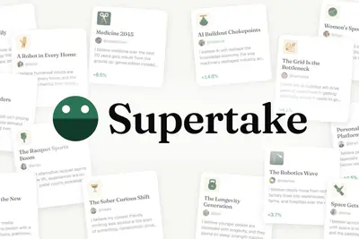
dellhpemeta
【科技早餐】AI 伺服器簽約後還被加價！最高漲 45%，Dell、HPE 等大廠重議價格
【科技早餐】今天精選 6 則國內外重要科技新聞。 ＊AI 伺服器簽約後仍被要求加價！最高 45%，企業採購面臨新風險 《Financial Times》11 月 22 日報導，戴爾（Dell）、慧與（HPE）、聯想（Lenovo）及美超微（Supermicro）等供應商，因記憶體成本上揚，向部分已簽約客戶要求提高 AI 伺服器售價，個別調幅最高達 45%，並非整體市場平均。英國量化交易公司 XTX Markets 在訴訟中主張，向 Dell 採購約 5.49 億美元伺服器，另付 500 萬美元換取價格確定性，仍被要求再支付約 6,200 萬至 7,000
- TechOrange 科技報橘 【科技早餐】AI 伺服器簽約後還被加價！最高漲 45%，Dell、HPE 等大廠重議價格
centerschaoticclimate
AI data centers throw another wrench into chaotic UN climate talks
The clean energy revolution hinges on electrifying the entire global economy just as power-hungry data centers are surging. It's a challenge delegates from all over the world had to grapple with during the United Nations climate conference, called COP31, that came to a chaotic an
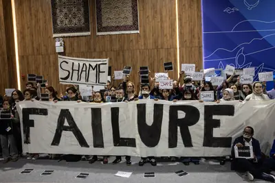
legendaryphilosopherbuying
A legendary philosopher isn’t buying Anthropic’s consciousness argument
This story originally appeared in The Algorithm, our weekly newsletter on AI. To get stories like this in your inbox first, sign up here. Before going public last week, Anthropic named the possibility that AI could be conscious or sentient as a risk factor for anyone investing. G
- MIT Technology Review AI A legendary philosopher isn’t buying Anthropic’s consciousness argument
galaxyheresamsung
You won’t see a Galaxy Watch 10 until 2028 – here’s why
In an effort to cut costs, Samsung is postponing the launch of the Galaxy Watch 10, according to reports. Here’s what to know.
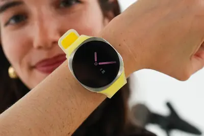
weatherfeaturepixel
Pixel Weather’s new feature lets you report your local conditions now
Weather apps are notoriously inaccurate. Google’s new feature can help.
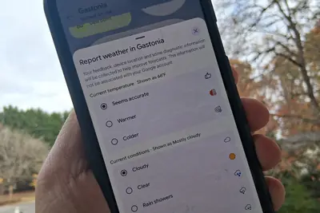
robotrackpointtracking
RoboTrack: Point tracking for real-world robotic manipulation
decartoptimization7.5
Amazon snaps up Decart’s AI optimization tech for $7.5B as it prepares to sell Trainium chips
Amazon is acquiring Decart’s AI optimization technology and research team in a reported $7.5 billion deal.
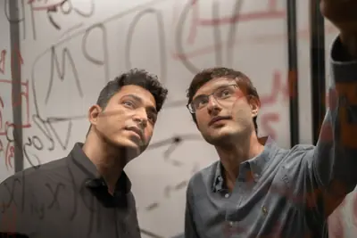
holidaymerryplay
Merry Making: Play, Build and Create With NVIDIA Technologies This Holiday Season
The elves don’t have to be the only ones busy in the workshop this holiday season. With the lights twinkling and the gift wrap out, it’s the perfect time to give someone — or yourself — a spark to take a hobby to the next level. For some, that means diving into a new game. […]
ostahuaweipro
华为星芒 OSTA O1 Pro 新机确认支持 eSIM 能力：最多四号，允许同时启用双卡
IT之家 11 月 23 日消息，首款为 AI 而生的鸿蒙手机 —— 华为星芒 OSTA O1 Pro 已于 11 月 20 日下午正式发布 ，叠加国补后 4999 元起。 ▲ IT之家开箱：华为全新子品牌星芒 OSTA O1 Pro 手机实拍 IT之家注意到，华为官网最新显示， 星芒 OSTA O1 Pro 支持 eSIM 能力 。 该功能需开通运营商相关业务使用，同一个手机可以存储最多 2 个 eSIM 号码，目前仅部分运营商提供 eSIM 业务。 当前同一个 eSIM 手机上最多允许支持四个号码 （2 张实体卡号码 + 2 个 eSIM 号码），